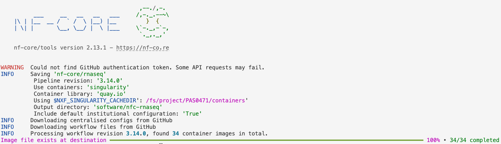

Lab: Running the nf-core rnaseq pipeline
1 Introduction
In this lab, we will run the nf-core rnaseq pipeline that I discussed in the lecture. Using raw RNA-seq reads in FASTQ files and reference genomes files, this pipeline will generate, among others, a gene count table.
That gene count table can then be analyzed to examine, for example, differential expression. That’s the topic of the self-study lab.

We will work with the data set from the paper “Two avian Plasmodium species trigger different transcriptional responses on their vector Culex pipiens”, published last year in Molecular Ecology (link):
This paper uses RNA-seq data to study gene expression in Culex pipiens mosquitoes infected with malaria-causing Plasmodium protozoans — specifically, it compares mosquito according to:
- Infection status: Plasmodium cathemerium vs. P. relictum vs. control
- Time after infection: 24 h vs. 10 days vs. 21 days
2 Getting started with VS Code
We will use the VS Code text editor to write a script to run the nf-core rnaseq pipeline. To emphasize the additional functionality relative to basic text editors like Notepad and TextEdit, editors like VS Code are also referred to as “IDEs”: Integrated Development Environments. The RStudio program is another good example of an IDE. Just like RStudio is an IDE for R, VS Code will be our IDE for shell code today.
2.1 Starting VS Code at OSC
Log in to OSC’s OnDemand portal at https://ondemand.osc.edu.
In the blue top bar, select
Interactive Appsand near the bottom, clickCode Server.VS Code runs on a compute node so we have to fill out a form to make a reservation for one:
- The OSC “Project” that we want to bill for the compute node usage:
PAS2658. - The “Number of hours” we want to make a reservation for:
2. - The “Working Directory” for the program: your personal folder in
/fs/scratch/PAS2658(e.g./fs/scratch/PAS2658/jelmer). - The “Codeserver Version”:
4.8(most recent). - Click
Launch.
- The OSC “Project” that we want to bill for the compute node usage:
First, your job will be “Queued” — that is, waiting for the job scheduler to allocate compute node resources to it.
Your job is typically granted resources within a few seconds (the card will then say “Starting”), and should be ready for usage (“Running”) in another couple of seconds. Once the job is running click on the blue Connect to VS Code button to open VS Code — it will open in a new browser tab.
When VS Code opens, you may get these two pop-ups (and possibly some others) — click “Yes” (and check the box) and “Don’t Show Again”, respectively:


- You’ll also get a Welcome/Get Started page — you don’t have to go through steps that may be suggested there.
2.2 The VS Code User Interface
Click to see an annotated screenshot

Side bars
The narrow side bar on the far left has:
- A (“hamburger menu”), which has menu items like
Filethat you often find in a top bar. - A (cog wheel icon) in the bottom, through which you can mainly access settings.
- Icons to toggle between options for what to show in the wide side bar, e.g. a File Explorer (the default option).
Terminal
Open a terminal with a Unix shell by clicking => Terminal => New Terminal. In the terminal, create a directory for this lab, e.g.:
# You should be in your personal dir in /fs/scratch/PAS2658
pwd/fs/scratch/PAS2658/jelmermkdir -p Lab9
cd Lab9
mkdir scripts run softwareEditor pane and Welcome document
The main part of the VS Code window is the editor pane. Here, you can open text files files like scripts, and images. Create and save a new file:
- Open a new file: Click the hamburger menu , then
File>New File. - Save the file (Ctrl/⌘+S), inside one of the dirs you just created:
Lab9/scripts/run.sh.
Conveniently, VS Code takes a specific directory as a starting point in all parts of the program:
- In the file explorer in the side bar
- In the terminal
- When saving files in the editor pane.
This is why your terminal was “already” located in /fs/scratch/PAS2658/<your-name>.
If you need to switch folders, click > File > Open Folder.
Resizing panes
You can resize panes (terminal, editor, side bar) by hovering your cursor over the borders and then dragging.Hide the side bars
If you want to save some screen space while coding along in class, you may want to occasionally hide the side bars:- In >
View>Appearanceyou can toggle both theActivity Bar(narrow side bar) and thePrimary Side Bar(wide side bar). - Or use keyboard shortcuts:
- Ctrl/⌘+B for the primary/wide side bar
- Ctrl+Shift+B for the activity/narrow side bar
- In >
The Command Palette
To access all the menu options that are available in VS Code, the so-called “Command Palette” can be handy, especially if you know what you are looking for. To access the Command Palette, click and thenCommand Palette(or press F1 or Ctrl/⌘+Shift+P). To use it, start typing something to look for an option.Keyboard shortcuts
For a single-page PDF overview of keyboard shortcuts for your operating system: =>Help=>Keyboard Shortcut Reference. (Or for direct links to these PDFs: Windows / Mac / Linux.)
Optional exercise: Install the Shellcheck extension
Click the gear icon and then Extensions, and search for and then install the shellcheck (by simonwong) extension, which will check your shell scripts for errors, and is extremely useful.
3 Setting up
3.1 Getting your own copy of the data
As mentioned above, we will use the RNA-seq data from Garrigos et al. 2023. However, to keep things manageable for a lab like this, I have subset the data set we’ll be working with to omit 21-day samples and only keep 500,000 reads per FASTQ file. All in all, our set of files consists of:
- 44 paired-end Illumina FASTQ files for 22 samples.
- Culex pipiens reference genome files from NCBI: assembly in FASTA format and annotation in GTF format.
- A metadata file in TSV format with sample IDs and treatment & time point info.
- A README file describing the data set.
Go ahead and get yourself a copy of the data with cp command:
cp -rv /fs/scratch/PAS2658/jelmer/share/* .‘/fs/scratch/PAS2658/jelmer/share/data’ -> ‘./data’
‘/fs/scratch/PAS2658/jelmer/share/data/meta’ -> ‘./data/meta’
‘/fs/scratch/PAS2658/jelmer/share/data/meta/metadata.tsv’ -> ‘./data/meta/metadata.tsv’
‘/fs/scratch/PAS2658/jelmer/share/data/ref’ -> ‘./data/ref’
‘/fs/scratch/PAS2658/jelmer/share/data/ref/GCF_016801865.2.gtf’ -> ‘./data/ref/GCF_016801865.2.gtf’
‘/fs/scratch/PAS2658/jelmer/share/data/ref/GCF_016801865.2.fna’ -> ‘./data/ref/GCF_016801865.2.fna’
‘/fs/scratch/PAS2658/jelmer/share/data/fastq’ -> ‘./data/fastq’
‘/fs/scratch/PAS2658/jelmer/share/data/fastq/ERR10802868_R2.fastq.gz’ -> ‘./data/fastq/ERR10802868_R2.fastq.gz’
‘/fs/scratch/PAS2658/jelmer/share/data/fastq/ERR10802863_R1.fastq.gz’ -> ‘./data/fastq/ERR10802863_R1.fastq.gz’
‘/fs/scratch/PAS2658/jelmer/share/data/fastq/ERR10802886_R2.fastq.gz’ -> ‘./data/fastq/ERR10802886_R2.fastq.gz’
# [...output truncated...]Use the tree command to get a nice overview of the files you copied:
# '-C' will add colors to the output (not visible in the output below)
tree -C datadata
├── fastq
│ ├── ERR10802863_R1.fastq.gz
│ ├── ERR10802863_R2.fastq.gz
│ ├── ERR10802864_R1.fastq.gz
│ ├── ERR10802864_R2.fastq.gz
│ ├── ERR10802865_R1.fastq.gz
│ ├── ERR10802865_R2.fastq.gz
├── [...truncated...]
├── meta
│ └── metadata.tsv
├── README.md
└── ref
├── GCF_016801865.2.fna
└── GCF_016801865.2.gtf
3 directories, 48 filesWe’ll take a look at some of the files:
The metadata file:
cat data/meta/metadata.tsvsample_id time treatment ERR10802882 10dpi cathemerium ERR10802875 10dpi cathemerium ERR10802879 10dpi cathemerium ERR10802883 10dpi cathemerium ERR10802878 10dpi control ERR10802884 10dpi control ERR10802877 10dpi control ERR10802881 10dpi control ERR10802876 10dpi relictum ERR10802880 10dpi relictum ERR10802885 10dpi relictum ERR10802886 10dpi relictum ERR10802864 24hpi cathemerium ERR10802867 24hpi cathemerium ERR10802870 24hpi cathemerium ERR10802866 24hpi control ERR10802869 24hpi control ERR10802863 24hpi control ERR10802871 24hpi relictum ERR10802874 24hpi relictum ERR10802865 24hpi relictum ERR10802868 24hpi relictumThe FASTQ files:
ls -lh data/fastqtotal 941M -rw-r--r-- 1 jelmer PAS2658 21M Mar 23 12:40 ERR10802863_R1.fastq.gz -rw-r--r-- 1 jelmer PAS2658 22M Mar 23 12:40 ERR10802863_R2.fastq.gz -rw-r--r-- 1 jelmer PAS2658 21M Mar 23 12:40 ERR10802864_R1.fastq.gz -rw-r--r-- 1 jelmer PAS2658 22M Mar 23 12:40 ERR10802864_R2.fastq.gz -rw-r--r-- 1 jelmer PAS2658 22M Mar 23 12:40 ERR10802865_R1.fastq.gz -rw-r--r-- 1 jelmer PAS2658 22M Mar 23 12:40 ERR10802865_R2.fastq.gz -rw-r--r-- 1 jelmer PAS2658 21M Mar 23 12:40 ERR10802866_R1.fastq.gz -rw-r--r-- 1 jelmer PAS2658 22M Mar 23 12:40 ERR10802866_R2.fastq.gz -rw-r--r-- 1 jelmer PAS2658 22M Mar 23 12:40 ERR10802867_R1.fastq.gz -rw-r--r-- 1 jelmer PAS2658 22M Mar 23 12:40 ERR10802867_R2.fastq.gz # [...output truncated...]
3.2 How we’ll run the pipeline
As discussed in the lecture, the entire nf-core rnaseq pipeline can be run with a single command. That said, before we can do so, we’ll need to a bunch of prep, such as:
- Activating the software environment and downloading the pipeline files.
- Defining the pipeline’s inputs and outputs, which includes creating a “sample sheet”.
- Downloading and slightly modifying a “config file” to run Nextflow pipelines at OSC.
We need the latter configuration because the pipeline will submit Slurm batch jobs for us for each step of the pipeline. And in most steps, programs are run independently for each sample, so the pipeline will submit a separate job for each sample for these steps — therefore, we’ll have many jobs altogether (typically 100s).
The main Nextflow process does not need much computing power (a single core with the default 4 GB of RAM will be sufficient) and even though our VS Code shell already runs on a compute and not a login node, we are still better off submitting the main process as a batch job as well, because:
- This process can run for hours and we don’t want to risk it disconnecting.
- We want to store all the standard output about pipeline progress and so on to a file — this will automatically end up in a Slurm log file if we submit it as a batch job.
3.3 Script setup
We will be working with two scripts in this lab:
A “runner” script that you can also think of as a digital lab notebook, containing commands that we run interactively. This is the
run/run.shscript you already created.A script that we will submit as a Slurm batch job with
sbatch, containing code to run the nf-core nextflow pipeline. We will save that asscripts/nfc-rnaseq.sh:# Create an empty file - this will be our batch job script touch scripts/nfc-rnaseq.sh
To give you an idea of what this will look like — the runner script will include code like this, which will submit the job script:
# (Don't run or copy this)
sbatch scripts/nfc_rnaseq.sh "$samplesheet" "$fasta" "$gtf" "$outdir"The variables above ("$samplesheet" etc.) are the inputs and outputs of the pipeline, which we will have defined elsewhere in the runner script. Inside the job script, we will then use these variables to run the pipeline in a specific way.
3.4 Activating the Conda environment
To save some time, you won’t do your own Conda installation of Nextflow or nf-core tools — I’ve installed both in an environment you can activate as follows:
# [Paste this code into the run/run.sh script, then run it in the terminal]
# First load OSC's (mini)Conda module
module load miniconda3
# Then activate the Nextflow conda environment
source activate /fs/ess/PAS0471/jelmer/conda/nextflowCheck the versions of Nextflow and nf-core tools:
# [Run this code directly in the terminal]
nextflow -vnextflow version 23.10.1.5891# [Run this code directly in the terminal]
nf-core --version ,--./,-.
___ __ __ __ ___ /,-._.--~\
|\ | |__ __ / ` / \ |__) |__ } {
| \| | \__, \__/ | \ |___ \`-._,-`-,
`._,._,'
nf-core/tools version 2.13.1 - https://nf-co.re
nf-core, version 2.13.13.5 Downloading the nf-core rnaseq pipeline
We will first set the environment variable NXF_SINGULARITY_CACHEDIR to tell Nextflow where to store the Singularity containers for all the tools that the pipeline runs. More commonly, these kinds of settings are specified with options (think, e.g., --cachedir) when you run commands, but somewhat oddly, this is the only way we can specify that here.
# [Paste this code into the run/run.sh script, then run it in the terminal]
export NXF_SINGULARITY_CACHEDIR=/fs/ess/PAS0471/containersNext, we’ll run the nf-core download command to download the currently latest version (3.14.0) of the rnaseq pipeline to software/rnaseq, and the associated container files to the previously specified dir:
# [Paste this code into the run/run.sh script, then run it in the terminal]
nf-core download rnaseq \
--revision 3.14.0 \
--outdir software/nfc-rnaseq \
--compress none \
--container-system singularity \
--container-cache-utilisation amend \
--download-configuration
nf-core download (Click to expand)
--revision: The version of the rnaseq pipeline.--outdir: The dir to save the pipeline definition files.--compress: Whether to compress the pipeline files — we chose not to.--container-system: The type of containers to download. This should always besingularityat OSC, because that’s the only supported type.--container-cache-utilisation: This is a little technical and not terribly interesting, but we usedamend, which will make it check our$NXF_SINGULARITY_CACHEDIRdir for existing containers, and simply download any that aren’t already found there.--download-configuration: This will download some configuration files that we will actually not use, but if you don’t provide this option, it will ask you about it when you run the command.
Let’s take a quick peek at the dirs and files we just downloaded:
# [Run this code directly in the terminal]
ls software/nfc-rnaseq3_14_0 configs# [Run this code directly in the terminal]
ls software/nfc-rnaseq/3_14_0assets CODE_OF_CONDUCT.md LICENSE nextflow.config subworkflows
bin conf main.nf nextflow_schema.json tower.yml
CHANGELOG.md docs modules pyproject.toml workflows
CITATIONS.md lib modules.json README.mdThe dir and file structure here is quite complicated, unfortunately, as are the individual pipeline definition files, so we won’t go into further detail about that here.
4 Writing a script to run the pipeline
In this section, we’ll go through the components of the scripts/nfc-rnaseq.sh script that we’ll later submit as a Slurm batch job. The most important part of this script is the nextflow command that will actually run the pipeline.
4.1 Building the nexftlow command
To run the pipeline, we use the command nextflow run, followed by the path to the pipeline dir we downloaded:
# [Partial shell script code, don't copy or run]
nextflow run software/nfc-rnaseq/3_14_0After that, there are several required options (see the pipeline’s documentation), which represent the input and output files/dirs for the pipeline:
--input: The path to a “sample sheet” with the paths to our FASTQ files (more on that below).--fasta: The path to a reference genome assembly FASTA file.--gtf: The path to a reference genome annotation file, preferably in GTF (.gtf) format1.--outdir: The path to the desired output dir for the final pipeline output.
With those, our partial command will be the following — note that we will pass all the inputs and outputs as arguments to our script, so they will be available inside the script as variables:
# [Partial shell script code, don't copy or run]
nextflow run software/nfc-rnaseq/3_14_0 \
--input "$samplesheet" \
--fasta "$fasta" \
--gtf "$gtf" \
--outdir "$outdir"As discussed in the lecture, this pipeline has different options for e.g. alignment and quantification. We will stick close to the defaults, which includes alignment with STAR and quantification with Salmon, with one exception: we do want to remove reads from ribosomal RNA (this step is skipped by default). As such, we will only use one optional pipeline option:
--remove_ribo_rna: Remove reads from ribosomal RNA with SortMeRNA.
We will also use a couple of general Nextflow options — note that these can be distinguished from the pipeline-specific options by their single dash - notation:
-c: A config file with settings to make Nextflow run smoothly on OSC’s cluster with Slurm.-profile: A so-called “profile”; should besingularitywhen running the pipeline with Singularity containers.work-dir: Whereas the pipeline’s final outputs will go tooutdir, all processes will run in, and initial outputs will be written to, a so-calledwork-dir. After each process, the key output files will next be copied tooutdir, and there are several pipeline options to determine what will and will not be copied2.-ansi-log false: This will simply change Nextflow’s logging type to a format that works with Slurm log files3.-resume: This will turn on functionality that will resume the pipeline wherever it left off (e.g., errored out) in the previous run. Similarly, if you have run the pipeline previously but add or replace one sample, this option would mean that the pipeline would only rerun the “single-sample steps” of the pipeline (which is most of them) for that sample as well as the steps that use all samples!4
With all of those added, our final command will be:
# [Partial shell script code, don't copy or run]
nextflow run software/nfc-rnaseq/3_14_0 \
--input "$samplesheet" \
--fasta "$fasta" \
--gtf "$gtf" \
--outdir "$outdir" \
--remove_ribo_rna \
-work-dir "$outdir"/raw \
-c config/osc.config \
-profile singularity \
-ansi-log false \
-resume4.2 Getting the OSC configuration file
I have previously created a Nextflow configuration file that basically tells Nextflow how it should submit batch jobs to OSC’s Slurm program, and I keep that on GitHub. We can download that file as follows inside the script:
# [Partial shell script code, don't copy or run]
# Define the config URL
CONFIG_URL=https://raw.githubusercontent.com/mcic-osu/mcic-scripts/main/nextflow/osc.config
# Define the config file path, which we'll put in the outdir
CONFIG_FILE="$outdir"/osc.config
# If the file doesn't already exist, download it
[[ ! -f "$CONFIG_FILE" ]] && wget -q -O "$CONFIG_FILE" "$CONFIG_URL"[[ ! -f "$CONFIG_FILE" ]]is a test statement that will return true if the config file does not exist:-ftests whether it exists (returning true if it does), and!turns the logic around (returning true if it doesn’t).With
&&, the next command (here: downloading the file) will only be executed if the previous[[ ... ]]test returned true, so if the file doesn’t already exist. The[[ ... ]] &&syntax used here is basically an abbreviatedifstatement.wgetwill download a file from the specified URL, and:- With
-q, we ask it to be quiet and not report download progress. - With
-O "$CONFIG_FILE", we specify the output file path.
- With
We won’t go into details about this file’s contents, but let’s take a quick look:
#TODOWe will need to make one change to the downloaded config file, because it includes instructions to use a different OSC project than the one we’re using here. With the code below, we first ask Slurm under which account the current job (which will be the script’s job) is running, and next, we replace the project number in the config file:
# [Partial shell script code, don't copy or run]
# Get and store the OSC project/account that the script uses to run:
osc_account=$(echo "$SLURM_JOB_ACCOUNT" | tr "[:lower:]" "[:upper:]")
# Replace the project in the config file with the correct project:
sed -i "s/PAS0471/$osc_account/" "$CONFIG_FILE"First line, osc_account=$(echo "$SLURM_JOB_ACCOUNT" | tr "[:lower:]" "[:upper:]"):
- The environment variable
$SLURM_JOB_ACCOUNTwill exist when the current process is running as a Slurm batch job, and will contain the OSC project/account under which the job is running. - However, for some reason
$SLURM_JOB_ACCOUNTcontains the project with lowercase letters (e.g.pas2658), so we will need to replace all lowercase letters with uppercase letters:tr "[:lower:]" "[:upper:]". - Finally, we store the output of the command in a variable
osc_accountusing what is called “command substitution”: if you wrap a command inside$(), you can store its output inside a variable.
Second line, sed -i "s/PAS0471/$osc_account/" "$CONFIG_FILE":
We use
sed’ss/<search>/<replace>/construct to find the literal string “PAS0471” (this is what’s hard-coded in the downloaded config file), and replace it with the project number that we stored in the previous line.With the
-ioption, we asksedto make the change “in place”, i.e. to edit the file instead of outputting to standard out.
4.3 The #SBATCH options
We will use #SBATCH header lines to define some parameters for our batch job for Slurm. Note that these are only for the “main” Nextflow job, not for the jobs that Nextflow itself will submit!
#SBATCH --account=PAS2658
#SBATCH --time=3:00:00
#SBATCH --mail-type=END,FAIL
#SBATCH --output=slurm-nfc_rnaseq-%j.out--account=PAS2658: As always, we have to specify the OSC project.--time=3:00:00: Ask for 3 hours (note that for a run of a full data set, you may want to use 6-24 hours).--mail-type=END,FAIL: Have Slurm send us an email when the job ends normally or with an error.--output=slurm-nfc_rnaseq-%j.out: Use a descriptive Slurm log file name (%jis the Slurm job number).- We only a need a single core and up to a couple GB of RAM, so the defaults will work for us for those.
4.4 The final script
We’ve covered most of the pieces of our script. Below is the full code for the script, in which I also added:
- A shebang header line to indicate that this is a Bash shell script:
#!/bin/bash. - A line to use “strict Bash settings”,
set -euo pipefail5. - Some
echoreporting of arguments/variables, printing the date, etc.
Paste the following into your scripts/nfc-rnaseq.sh script:
#!/bin/bash
#SBATCH --account=PAS2658
#SBATCH --time=3:00:00
#SBATCH --mail-type=END,FAIL
#SBATCH --output=slurm-nfc_rnaseq-%j.out
# Settings and constants
CONFIG_URL=https://raw.githubusercontent.com/mcic-osu/mcic-scripts/main/nextflow/osc.config
WORKFLOW_DIR=software/nfc-rnaseq/3_14_0
# Load the Nextflow Conda environment
module load miniconda3
source activate /fs/ess/PAS0471/jelmer/conda/nextflow
export NXF_SINGULARITY_CACHEDIR=/fs/ess/PAS0471/containers
# Strict Bash settings
set -euo pipefail
# Process command-line arguments
samplesheet=$1
fasta=$2
gtf=$3
outdir=$4
# Report
echo "Starting script nfc-rnaseq.sh"
date
echo "Samplesheet: $samplesheet"
echo "Reference FASTA: $fasta"
echo "Reference GTF: $gtf"
echo "Output dir: $outdir"
echo
# Create the output dir
mkdir -p "$outdir"
# Get the OSC config file
CONFIG_FILE="$outdir"/osc.config
[[ ! -f "$CONFIG_FILE" ]] && wget -q -O "$CONFIG_FILE" "$CONFIG_URL"
# Replace the project number in the config file
osc_account=$(echo "$SLURM_JOB_ACCOUNT" | tr "[:lower:]" "[:upper:]")
sed -i "s/PAS0471/$osc_account" "$CONFIG_FILE"
# Run the pipeline
nextflow run "$WORKFLOW_DIR" \
--input "$samplesheet" \
--fasta "$fasta" \
--gtf "$gtf" \
--outdir "$outdir" \
--remove_ribo_rna \
-work-dir "$outdir"/raw \
-c "$CONFIG_FILE" \
-profile singularity \
-ansi-log false \
-resume
# Report
echo "Done with script nfc-rnaseq.sh"
date5 Running the pipeline
We will now switch back to the run/run.sh script to add the code to actually run the pipeline.
5.1 Prepare the samplesheet
This pipeline requires a “sample sheet” as one of its inputs. In the sample sheet, you provide the locations of your FASTQ files and the so-called “strandedness” of your RNA-Seq library.
RNA-Seq library prep is commonly done by sequencing facilities and many researchers don’t know the strandedness of the library, which can be unstranded (specify unstranded in the pipeline sample sheet; this used to be the default but is not so common anymore) or strand-specific either in reverse-stranded (reverse, by far the most common) or forward-stranded (forward) fashion. For more information about library strandedness, see this page.
The pipeline also allows for a fourth option: auto, in which case the strandedness is automatically determined. This does add a bit of running time to the pipeline, as it will start out by determining the strandedness by pseudo-mapping a small proportion of the data with Salmon.
The sample sheet should be a plain-text comma-separated values (CSV) file. Here is the example file from the pipeline’s documentation:
sample,fastq_1,fastq_2,strandedness
CONTROL_REP1,AEG588A1_S1_L002_R1_001.fastq.gz,AEG588A1_S1_L002_R2_001.fastq.gz,auto
CONTROL_REP1,AEG588A1_S1_L003_R1_001.fastq.gz,AEG588A1_S1_L003_R2_001.fastq.gz,auto
CONTROL_REP1,AEG588A1_S1_L004_R1_001.fastq.gz,AEG588A1_S1_L004_R2_001.fastq.gz,autoSo, we need a header row with column names, then one row per sample, and the following columns:
- Sample ID (we will simply use the part of the file names shared by R1 and R2).
- R1 FASTQ file path (including the dir unless they are in your working dir).
- R2 FASTQ file path (idem).
- Strandedness:
unstranded,reverse,forward, orauto(see above) — this data is forward-stranded, so we will useforwardhere.
You can create this file in several ways — we will do it here with a helper script that comes with the pipeline (the box below shows an alternative method with Unix shell commands):
First, we define an output dir (this will also be the output dir for the pipeline), and the sample sheet file name:
# [Paste this into run/run.sh and then run it in the terminal] # Create the sample sheet for the nf-core pipeline outdir=results/nfc-rnaseq samplesheet="$outdir"/nfc_samplesheet.csv mkdir -p "$outdir"Next, we run that helper script, specifying the strandedness of our data, the suffices of the R1 and R2 FASTQ files, and as arguments at the end, the input FASTQ dir (
data/fastq) and the output file ($samplesheet):# [Paste this into run/run.sh and then run it in the terminal] python3 software/nfc-rnaseq/3_14_0/bin/fastq_dir_to_samplesheet.py \ --strandedness forward \ --read1_extension "_R1.fastq.gz" \ --read2_extension "_R2.fastq.gz" \ data/fastq \ "$samplesheet"Finally, let’s check the contents of our newly created sample sheet file:
# [Run this directly in the terminal] cat "$samplesheet"sample,fastq_1,fastq_2,strandedness ERR10802863,data/fastq/ERR10802863_R1.fastq.gz,data/fastq/ERR10802863_R2.fastq.gz,forward ERR10802864,data/fastq/ERR10802864_R1.fastq.gz,data/fastq/ERR10802864_R2.fastq.gz,forward ERR10802865,data/fastq/ERR10802865_R1.fastq.gz,data/fastq/ERR10802865_R2.fastq.gz,forward ERR10802866,data/fastq/ERR10802866_R1.fastq.gz,data/fastq/ERR10802866_R2.fastq.gz,forward ERR10802867,data/fastq/ERR10802867_R1.fastq.gz,data/fastq/ERR10802867_R2.fastq.gz,forward ERR10802868,data/fastq/ERR10802868_R1.fastq.gz,data/fastq/ERR10802868_R2.fastq.gz,forward ERR10802869,data/fastq/ERR10802869_R1.fastq.gz,data/fastq/ERR10802869_R2.fastq.gz,forward ERR10802870,data/fastq/ERR10802870_R1.fastq.gz,data/fastq/ERR10802870_R2.fastq.gz,forward ERR10802871,data/fastq/ERR10802871_R1.fastq.gz,data/fastq/ERR10802871_R2.fastq.gz,forward ERR10802874,data/fastq/ERR10802874_R1.fastq.gz,data/fastq/ERR10802874_R2.fastq.gz,forward ERR10802875,data/fastq/ERR10802875_R1.fastq.gz,data/fastq/ERR10802875_R2.fastq.gz,forward ERR10802876,data/fastq/ERR10802876_R1.fastq.gz,data/fastq/ERR10802876_R2.fastq.gz,forward ERR10802877,data/fastq/ERR10802877_R1.fastq.gz,data/fastq/ERR10802877_R2.fastq.gz,forward ERR10802878,data/fastq/ERR10802878_R1.fastq.gz,data/fastq/ERR10802878_R2.fastq.gz,forward ERR10802879,data/fastq/ERR10802879_R1.fastq.gz,data/fastq/ERR10802879_R2.fastq.gz,forward ERR10802880,data/fastq/ERR10802880_R1.fastq.gz,data/fastq/ERR10802880_R2.fastq.gz,forward ERR10802881,data/fastq/ERR10802881_R1.fastq.gz,data/fastq/ERR10802881_R2.fastq.gz,forward ERR10802882,data/fastq/ERR10802882_R1.fastq.gz,data/fastq/ERR10802882_R2.fastq.gz,forward ERR10802883,data/fastq/ERR10802883_R1.fastq.gz,data/fastq/ERR10802883_R2.fastq.gz,forward ERR10802884,data/fastq/ERR10802884_R1.fastq.gz,data/fastq/ERR10802884_R2.fastq.gz,forward ERR10802885,data/fastq/ERR10802885_R1.fastq.gz,data/fastq/ERR10802885_R2.fastq.gz,forward ERR10802886,data/fastq/ERR10802886_R1.fastq.gz,data/fastq/ERR10802886_R2.fastq.gz,forward
# A) Define the file name and create the header line
echo "sample,fastq_1,fastq_2,strandedness" > "$samplesheet"
# B) Add a row for each sample based on the file names
ls data/fastq/* | paste -d, - - |
sed -E -e 's/$/,forward/' -e 's@.*/(.*)_R1@\1,&@' >> "$samplesheet"Here is an explanation of the last command:
The
lscommand will spit out a list of all FASTQ files that includes the dir name.paste - -will paste that FASTQ files side-by-side in two columns — because there are 2 FASTQ files per sample, and they are automatically correctly ordered due to their file names, this will create one row per sample with the R1 and R2 FASTQ files next to each other.The
-d,option topastewill use a comma instead of a Tab to delimit columns.We use
sedwith extended regular expressions (-E) and two separate search-and-replace expressions (we need-ein front of each when there is more than one).The first
sedexpression's/$/,forward/'will simply add,forwardat the end ($) of each line to indicate the strandedness.The second
sedexpression,'s@.*/(.*)_R1@\1,&@':- Here we are adding the sample ID column by copying that part from the R1 FASTQ file name.
- This uses
s@<search>@replace@with@instead of/, because there is a/in our search pattern. - In the search pattern (
.*/(.*)_R1), we capture the sample ID with(.*). - In the replace section (
\1,&), we recall the captured sample ID with\1, then insert a comma, and then insert the full search pattern match (i.e., the path to the R1 file) with&.
We append (
>>) to the file because we need to keep the header line that we had already put in it.
5.2 Submit the script
As a last preparatory step, we will save the paths of the reference genome files in variables:
# [Paste this into run/run.sh and then run it in the terminal]
fasta=data/ref/GCF_016801865.2.fna
gtf=data/ref/GCF_016801865.2.gtfNow we are ready to submit the script as a batch job:
# [Paste this into run/run.sh and then run it in the terminal]
sbatch scripts/nfc-rnaseq.sh "$samplesheet" "$fasta" "$gtf" "$outdir"Submitted batch job 277678615.3 Check the progress
We can check whether our job has started running, and whether Nextflow has already spawned jobs itself, with the squeue command:
# [Run this directly in the terminal]
squeue -u $USER -lMon Mar 25 12:13:38 2024
JOBID PARTITION NAME USER STATE TIME TIME_LIMI NODES NODELIST(REASON)
27767854 serial-40 nfc-rnas jelmer RUNNING 1:33 3:00:00 1 p0219In the output above, the only running job is our the script itself, i.e. the main Nextflow process. We didn’t explicitly give the job a name so the NAME column gives the name of the script, nfc-rnaseq.sh (truncated to nfc-rnas).
squeue output with Nextflow-submitted jobs (Click to expand)
The top job, with partial name nf-NFCOR, is a job that’s been submitted by Nextflow:
squeue -u $USER -lMon Mar 25 13:14:53 2024
JOBID PARTITION NAME USER STATE TIME TIME_LIMI NODES NODELIST(REASON)
27767861 serial-40 nf-NFCOR jelmer RUNNING 5:41 16:00:00 1 p0053
27767854 serial-40 nfc_rnas jelmer RUNNING 1:03:48 3:00:00 1 p0219Unfortunately, the columns in the output above are quite narrow, so it’s not possible to see which step of the pipeline is being run by that job. The following (awful-looking!) code can be used to make that column much wider, so we can see the job’s full name which makes clear which step is being run (rRNA removal with SortMeRNA):
squeue -u $USER --format="%.9i %.9P %.60j %.8T %.10M %.10l %.4C %R %.16V"Mon Mar 25 13:15:05 2024
JOBID PARTITION NAME STATE TIME TIME_LIMIT CPUS NODELIST(REASON) SUBMIT_TIME
27767861 serial-40 nf-NFCORE_RNASEQ_RNASEQ_SORTMERNA_(SRR27866691_SRR27866691) RUNNING 5:55 16:00:00 12 p0053 2024-03-23T09:37
27767854 serial-40 nfc_rnaseq RUNNING 1:04:02 3:00:00 1 p0219 2024-03-23T09:36We can keep an eye on the pipeline’s progress, and see if there are any errors, by checking the Slurm log file — the top of the file should look like this:
# You will have a different job ID - replace as appropriate or use Tab completion
less slurm-nfc_rnaseq-27767861.outStarting script nfc-rnaseq.sh
Mon Mar 25 13:01:30 EDT 2024
Samplesheet: results/nfc-rnaseq/nfc_samplesheet.csv
Reference FASTA: data/ref/GCF_016801865.2.fna
Reference GTF: data/ref/GCF_016801865.2.gtf
Output dir: results/nfc-rnaseq
N E X T F L O W ~ version 23.10.1
Launching `software/nfc-rnaseq/3_14_0/main.nf` [curious_linnaeus] DSL2 - revision: 746820de9b
WARN: ~~~~~~~~~~~~~~~~~~~~~~~~~~~~~~~~~~~~~~~~~~~~~~~~~~~~~~~~~~~~~~~~~~~~~~
Multiple config files detected!
Please provide pipeline parameters via the CLI or Nextflow '-params-file' option.
Custom config files including those provided by the '-c' Nextflow option can be
used to provide any configuration except for parameters.
Docs: https://nf-co.re/usage/configuration#custom-configuration-files
~~~~~~~~~~~~~~~~~~~~~~~~~~~~~~~~~~~~~~~~~~~~~~~~~~~~~~~~~~~~~~~~~~~~~~~~~~~~
------------------------------------------------------
,--./,-.
___ __ __ __ ___ /,-._.--~'
|\ | |__ __ / ` / \ |__) |__ } {
| \| | \__, \__/ | \ |___ \`-._,-`-,
`._,._,'
nf-core/rnaseq v3.14.0
------------------------------------------------------
Core Nextflow options
runName : curious_linnaeus
containerEngine : singularity
[...output truncated...]The warning about config files shown above can be ignored. Some of this output actually has nice colors:

The job progress is show in the following way — we only see which jobs are being submitted, not when they finish6:
[e5/da8328] Submitted process > NFCORE_RNASEQ:RNASEQ:PREPARE_GENOME:GTF_FILTER (GCF_016801865.2.fna)
[b5/9427a1] Submitted process > NFCORE_RNASEQ:RNASEQ:PREPARE_GENOME:CUSTOM_GETCHROMSIZES (GCF_016801865.2.fna)
[05/e0e09f] Submitted process > NFCORE_RNASEQ:RNASEQ:FASTQ_FASTQC_UMITOOLS_TRIMGALORE:TRIMGALORE (ERR10802863)
[25/a6c2f5] Submitted process > NFCORE_RNASEQ:RNASEQ:FASTQ_FASTQC_UMITOOLS_TRIMGALORE:FASTQC (ERR10802863)
[24/cef9a0] Submitted process > NFCORE_RNASEQ:RNASEQ:FASTQ_FASTQC_UMITOOLS_TRIMGALORE:TRIMGALORE (ERR10802864)
[b1/9cfa7e] Submitted process > NFCORE_RNASEQ:RNASEQ:FASTQ_FASTQC_UMITOOLS_TRIMGALORE:FASTQC (ERR10802864)
[c4/3107c1] Submitted process > NFCORE_RNASEQ:RNASEQ:FASTQ_FASTQC_UMITOOLS_TRIMGALORE:TRIMGALORE (ERR10802865)
[7e/92ec89] Submitted process > NFCORE_RNASEQ:RNASEQ:FASTQ_FASTQC_UMITOOLS_TRIMGALORE:TRIMGALORE (ERR10802866)
[01/f7ccfb] Submitted process > NFCORE_RNASEQ:RNASEQ:FASTQ_FASTQC_UMITOOLS_TRIMGALORE:FASTQC (ERR10802866)
[42/4b4da2] Submitted process > NFCORE_RNASEQ:RNASEQ:FASTQ_FASTQC_UMITOOLS_TRIMGALORE:TRIMGALORE (ERR10802868)
[8c/fe6ca5] Submitted process > NFCORE_RNASEQ:RNASEQ:FASTQ_FASTQC_UMITOOLS_TRIMGALORE:TRIMGALORE (ERR10802867)
[e6/a12ec8] Submitted process > NFCORE_RNASEQ:RNASEQ:FASTQ_FASTQC_UMITOOLS_TRIMGALORE:FASTQC (ERR10802867)
[2e/f9059d] Submitted process > NFCORE_RNASEQ:RNASEQ:FASTQ_FASTQC_UMITOOLS_TRIMGALORE:FASTQC (ERR10802865)
[de/2735d1] Submitted process > NFCORE_RNASEQ:RNASEQ:FASTQ_FASTQC_UMITOOLS_TRIMGALORE:FASTQC (ERR10802868)You should also see the following warning among the job submissions (Click to expand)
This warning can be ignored, the “Biotype QC” is not important and this information is indeed simply missing from our GTF file, there is nothing we can do about that.
WARN: ~~~~~~~~~~~~~~~~~~~~~~~~~~~~~~~~~~~~~~~~~~~~~~~~~~~~~~~~~~~~~~~~~~~~~~
Biotype attribute 'gene_biotype' not found in the last column of the GTF file!
Biotype QC will be skipped to circumvent the issue below:
https://github.com/nf-core/rnaseq/issues/460
Amend '--featurecounts_group_type' to change this behaviour.
~~~~~~~~~~~~~~~~~~~~~~~~~~~~~~~~~~~~~~~~~~~~~~~~~~~~~~~~~~~~~~~~~~~~~~~~~~~~But any errors would be reported in this file, and are also able to see when the pipeline has finished — then, the last few lines of the file should like as follows:
[28/79e801] Submitted process > NFCORE_RNASEQ:RNASEQ:BEDGRAPH_BEDCLIP_BEDGRAPHTOBIGWIG_FORWARD:UCSC_BEDGRAPHTOBIGWIG (ERR10802864)
[e0/ba48c9] Submitted process > NFCORE_RNASEQ:RNASEQ:BEDGRAPH_BEDCLIP_BEDGRAPHTOBIGWIG_REVERSE:UCSC_BEDGRAPHTOBIGWIG (ERR10802864)
[62/4f8c0d] Submitted process > NFCORE_RNASEQ:RNASEQ:MULTIQC (1)
-[nf-core/rnaseq] Pipeline completed successfully -
Done with script nfc-rnaseq.sh
Mon Mar 25 14:09:52 EDT 20246 Checking the pipeline’s output
If your pipeline run finished in time, you can take a look at the files and dirs in the output dir we specified:
ls -lh results/nfc-rnaseqtotal 83K
drwxr-xr-x 2 jelmer PAS0471 16K Mar 25 13:02 fastqc
drwxr-xr-x 2 jelmer PAS0471 4.0K Mar 25 12:58 logs
drwxr-xr-x 3 jelmer PAS0471 4.0K Mar 25 13:14 multiqc
-rw-r--r-- 1 jelmer PAS0471 2.0K Mar 25 19:55 nfc_samplesheet.csv
-rw-r--r-- 1 jelmer PAS0471 2.1K Mar 25 13:01 osc.config
drwxr-xr-x 2 jelmer PAS0471 4.0K Mar 25 13:14 pipeline_info
drwxr-xr-x 248 jelmer PAS0471 16K Mar 25 13:10 raw
drwxr-xr-x 2 jelmer PAS0471 4.0K Mar 25 13:06 sortmerna
drwxr-xr-x 33 jelmer PAS0471 16K Mar 25 13:12 star_salmon
drwxr-xr-x 3 jelmer PAS0471 4.0K Mar 25 13:02 trimgaloreThe two outputs we are most interested in are:
The MultiQC report (
results/nfc-rnaseq/multiqc/star_salmon/multiqc_report.html): this has lots of QC summaries of the data, both the raw data and the alignments, and even a gene expression PCA plot.The gene count table (
results/nfc-rnaseq/star_salmon/salmon.merged.gene_counts_length_scaled.tsv): if you do the Gene count table analysis lab, you will use this file as the main input.
6.1 The MultiQC report
You can find a copy of the MultiQC report on this website, here. Go ahead and open that in a separate browser tab.
Here are some of the things to pay attention to in the MultiQC report:
The General Statistics table (the first section) is very useful, with the following notes:
- Almost everything that’s in the table can also be found in the graphs further down, but this table nicely shows things side-by-side.
- The
%rRNA(percentage of reads that were identified as rRNA-derived and subsequently removed by SortMeRNA) can only be found in this table. - Make sure to hide the columns with statistics from Samtools, which can be confusing if not downright misleading. Click on “Configure Columns” and uncheck all the boxes for Samtools stats.
- Some stats are for R1 and R2 files only, and some are for each sample as a whole. Therefore, you unfortunately get 3 rows per sample.
The STAR_SALMON DESeq2 PCA plot is a Principal Component Analysis plot showing overall differences between samples.
The Qualimap > Genomic origin of reads plot will show, for each sample, the proportion of reads mapping to exonic vs. intronic vs. intergenic regions. This is an important QC plot: you’d like to see the vast majority of your reads to be exonic. (The RSeQC > Read Distribution plot will show this with even more categories, e.g. separating UTRs.)
The Qualimap > Gene Coverage Profile plot
The RSeqQC > Infer experiment plot
The STAR > Alignment Scores plot
There are FastQC plots both before and after trimming with TrimGalore/Cutadapt. The most important ones are:
- Sequence Quality Histograms
- Per Sequence GC Content
- Adapter Content
To download the MultiQC HTML file at results/nfc-rnaseq/multiqc/star_salmon/multiqc_report.html, find this file in the VS Code explorer (file browser) on the left, right-click on it, and select Download....
You can download it to any location on your computer. Then find the file on your computer and click on it to open it — it should be opened in your browser.
Footnotes
But the pipeline can accept GFF/GFF3 (
.gff/.gff3) format files as well.↩︎This distinction makes sense on HPC systems like OSC, where you can use a scratch dir with lots of storage space and fast I/O for the
workdir, and a backed-up project dir as theoutdir, which will then not become unnecessarily large.↩︎The default logging does not work well the output goes to a text file, as it will in our case because we will submit the script with the Nextflow command as a Slurm batch job.↩︎
This option won’t make any difference when we run the pipeline for the first time, since there is nothing to resume. Nextflow will even give a warning along these lines.↩︎
These setting will make the script abort whenever an error occurs, and it will also turn referencing unassigned/non-existing variables into an error. This is a recommended best-practice line to include in all shell scripts.↩︎
The default Nextflow logging (without
-ansi-log false) does show when jobs finish, but this would result in very messy output in a Slurm log file.↩︎